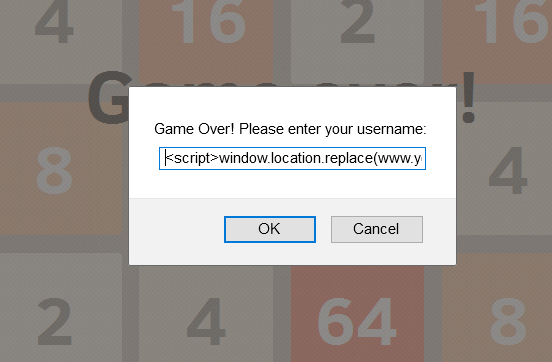
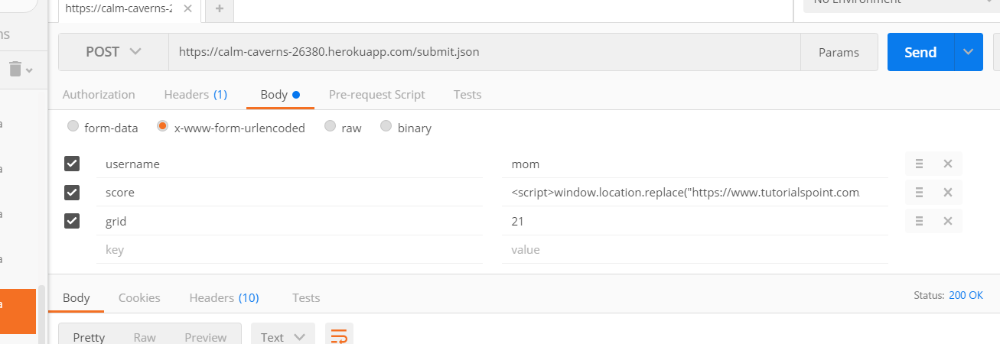
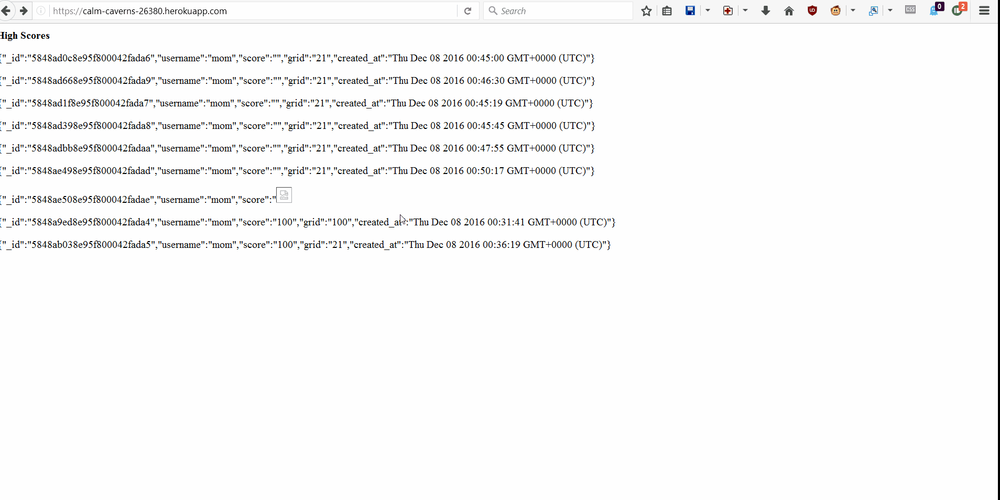
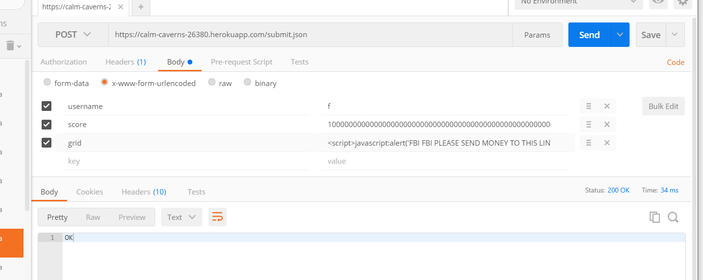
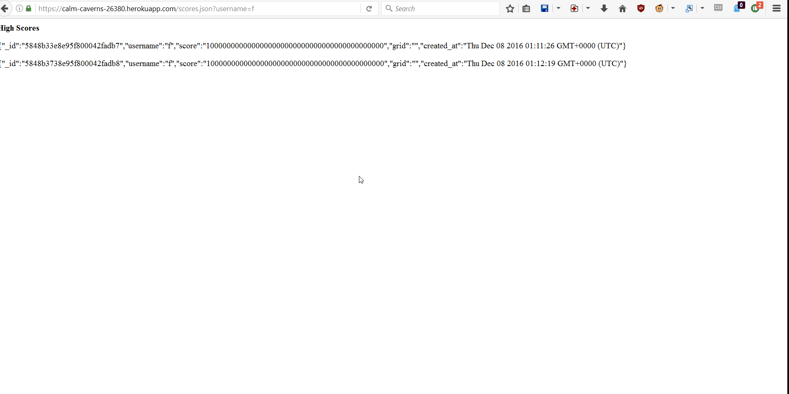

Introduction
This will be going over web services provided for the storage of data for a 2048 game provided by the client. Specifically I would be focusing on the server side of this application, which would provide mainly 3 different services. THe web application would store the user's username, score, grid and the date the created user object. Another service that will be provided would be not only a list of scores for all users, but will also be able to provided a list for each individual user, where they can see only their scores. I mainly focused on the transfer of data and how exactly the service dealt with different types of data and controlling user parameter manipulation.
Methodology
Mostly the tools I went about using to manipulate the data was PostMan app on Google Chrome. Other than that it was simple input into the user prompt box. How I went about using PostMan was being able to send different types of parameters with different types of script commands in the different parameter boxes and saw how the server dealt with this data by attempting to access this data. I was able to see these different data inputs stack up when I called the '/' page and saw how each was executed and the order they were executed. I was also able to separate the different types of data to test how the server dealt with data being passed in the user parameter, the score parameter and the grid parameter by calling different '/score,json?' uri.
Abstract of Findings
At last and overall most of the problems with the server that I found was that when the user manipulated the data being sent to the server, the server trusted the user that this data would be correct and stored it as is. This is wrong and should be fixed since this would allow for attacks on other users when this data is shown to others through a browser.
Issues Found
Issue Found: #1
- Issue:Cross-Site Scripting through username box
- Location:When the box prompting for username shows up.
- Severity:HIGH. This allows for a scripting attack to be able to be done to all users who will be attempting to access the '/' page to see the previous scores.
- Description of Issue:When a user inputs their username into the box prompting for their username, there is not limit for what can be put, so once the name is put, when the '/' tries to render the page with all the scores, it reads the name as an actual script command.
- 
- Proof of Vulnerability:

- Resolution:Two different ways this can be solved. One would be to limit the length of a username to a length short enough where no damage can be done, along with replacing < and > so they would not be able to run
Issue Found: #2
- Issue:Cross Site Scripting through the score parameter
- Location:This occurs when attempting to display the score of a user.
- Severity:High. This is a Cross Side scripting attack, which would allow for manipulation of other clients by manipulating the manner in which a browser interprets data, since it would read the score, which should be a series of numbers, to be an actual script command.
- Description of Issue:The score parameter is taken as is, and nothing is done to ensure the data is simply number from the 2048 game, which is assuming to much of the user to not manipulate this parameter.
- 
- Proof of Vulnerability:
- 
- Resolution:Similar to the previous, it would be best to ensure that the data is taken in for the score parameter to be simply numbers, and also to ensure a length and to change the < and > to their HTML opposite.
Issue Found: #3
- Issue:Cross Site Scripting through the grid parameter
- Location:This occurs when attempting to display a user's score, can only be done by manipulating the grid parameter being sent to the user.
- Severity:High. Just as the other Cross Side Scripting issues, this issues shares the fact that the host trusts the user to send the appropriate grid data to the server. This can be taken advantage of by anyone who wants to send a manipulative and malicious score to other users.
- Description of Issue:The grid issues is
- 
- Proof of Vulnerability:
- 
- Resolution:Similar to the others, ensure that the data sent by the user is the correct grid data. For this ensuring length will be difficult, but can avoid script manipulating by changing < and > to their non-malicious equivalent.
Conclusion
The fixes for the issues that I was able to find are simple fixes that will be able to be solved by adding extra lines of codes to the different areas where the data is taken in by the server. Ensure in the future whenever there are more areas where there is input taken from the user, don't trust their input and attempt to sanitize the data.